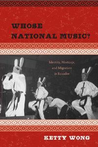

<body bgcolor="#FFFFFF" text="#000000" link="#0000FF" vlink="#CC0000" alink="#CC0000"><center><hr width="350" size="1" align="center" noshade>How class divisions shape the definition of Ecuador's national music and identity<hr width="350" size="1" align="center" noshade><p><a href="https://cdcshoppingcart.uchicago.edu/Cart/ChicagoBook.aspx?ISBN=9781439900574&&PRESS=temple" target="_top">Buy this book!</a> | <a href="https://cdcshoppingcart.uchicago.edu/Cart/Cart.aspx?PRESS=temple" target="_top">View Cart</a> | <a href="https://cdcshoppingcart.uchicago.edu/Cart/Cart.aspx?PRESS=temple" target="_top">Check Out</a></p><p></p></center><!--none//--><h1>Whose National Music?</h1>
<H2>Identity, <i>Mestizaje</i>, and Migration in Ecuador</H2>
<h3>Ketty Wong</h3>
<P>cloth 1-4399-0057-4 $70.50, Sep 12, <FONT COLOR=#990033>Available</FONT>
<br>Electronic Book 1-4399-0059-0 $70.50 <FONT COLOR=#990033>Available</FONT>
<BR> 272 pp
6x9
1&nbsp;map(s) 18&nbsp;figures 19&nbsp;halftones
</P><h3 align="center"><P><font color="#996633">Latin American Studies Association Ecuadorian Studies Section Book Prize for the most outstanding work published in the field of Ecuadorian studies,
2012</font></P>
</H3>
<BLOCKQUOTE><I>"Wong has produced a very important work—the first comprehensive book on Ecuadorian popular music with interviews, a thorough, readable study of the local record industry, and participant-observation fieldwork. She succeeds in linking the issues of national identity with popular music, explaining </i>música nacional<i>, the history of the </i>pasillo<i>, of the </i>musica rocolera<i>, of </i>musica chicha<i> and the </i>tecnocumbia<i>. Her arguments are solid and her theoretical approach is informed."</I><br>&#151<b>Raul R. Romero</b>, Director of the Institute of Ethnomusicology at the Catholic University of Peru<I></I></BLOCKQUOTE>
<P>Musical genres, musical instruments, and even songs can often capture the essence of a country's national character. In <i>Whose National Music?</i>, the first book-length study of Ecuadorian popular music, Ketty Wong explores Ecuadorians' views of their national identity in the twentieth and early twenty-first centuries through an examination of the music labels they use. Wong deftly addresses the notion of <i>música nacional</i>, an umbrella term for Ecuadorian popular songs often defined by the socio-economic, ethnic, racial, and generational background of people discussing the music.
<P>Wong shows how the inclusion or exclusion of elite and working-class musics within the scope of <i>música nacional</i> articulate different social, ethnic, and racial configurations of the nation for white, mestizo, indigenous, and Afro-Ecuadorian populations.
<P>Presenting a macropicture of what <i>música nacional</i> is—or should be—<i>Whose National Music?</i> provides a lively historical trajectory of a country's diverse musical scene.
<BR>&nbsp;<h2>Excerpt</h2><P>Excerpt available at <a href="http://www.temple.edu/tempress">www.temple.edu/tempress</a></p>
<BR>&nbsp;<h2>Reviews</h2>
<p><i>"</i>Whose National Music?<i> introduces an analysis rich in historical depth and socio-musical complexity of the idiosyncratic, changing, and inevitably contested use of the term </i>música nacional<i> in Ecuador. Ketty Wong provides a fascinating discourse analysis, one that focuses on the power of language to claim and label music as a participatory act in imagining the nation."</i><br>&#151;<b><i>Ethnomusicology</i></b>
<BR>&nbsp;<h2>Contents</h2><P>
<p>List of Multimedia Examples
<br>Acknowledgments
<br>Introduction
<br>1. The Nation in Bloom: A Search for “Ecuadorianness”
<br>2. <i>La M&#250;sica Nacional</i>: An Anthology of Songs
<br>3. The <i>Pasillo</i>: Rise and Decline of the National Song
<br>4. <i>Rocolera</i> Music: New Urban Sounds in the City
<br>5. <i>Chichera</i> Music: The “Tropicalization” of <i>M&#250;sica Nacional</i>
<br>6. The <i>Tecnocumbia</i> Boom in Ecuador: “A Letter with My Kisses Sent with Love by Internet”
<br>7. The Translocation of Ecuadorian Popular Music
<br>Epilogue: Whose National Music?
<br>Appendices
<br>Notes
<br>Glossary of Ethnic and Musical Terms
<br>Bibliography
<br>Index
</P><BR>&nbsp;<H2>About the Author(s)</H2>
<P><b>Ketty Wong</b> is an Assistant Professor of Ethnomusicology at the University of Kansas. In 2010, she received the prestigious Casa de las Américas Musicology Prize for <i>La música nacional: Identidad, mestizaje y migración en el Ecuador</i>, the Spanish language version of this book.</P>
<BR><H2>Subject Categories</H2>
<p><A HREF="/tempress/music.html" TARGET="_top">Music and Dance</a>
<BR><A HREF="/tempress/latin.html" TARGET="_top">Latin American/Caribbean Studies</a>
<BR>
</p>
<BR><h2 class="inpageheading">In the series</H2>
<P><I><a href="http://www.temple.edu/tempress/latin_music.html" onMouseOver="window.status='Click for other books in this series!'; return true;" onMouseOut="window.status=''; return true;" target="_top">Studies in Latin American and Caribbean Music</a></i>, edited by Peter Manuel.
</p><p><i>Studies in Latin American and Caribbean Music</i>, edited by Peter Manuel, aims to present interdisciplinary studies in the traditional and contemporary musics of Latin America and the Caribbean.</p>
<p align="center"><a href="https://cdcshoppingcart.uchicago.edu/Cart/ChicagoBook.aspx?ISBN=9781439900574&&PRESS=temple" target="_top">Buy this book!</a> | <a href="https://cdcshoppingcart.uchicago.edu/Cart/Cart.aspx?PRESS=temple" target="_top">View Cart</a> | <a href="https://cdcshoppingcart.uchicago.edu/Cart/Cart.aspx?PRESS=temple" target="_top">Check Out</a></p><p><font face="Arial" size="1"><a href="copyright.html" onMouseOver="window.status='Web Copyright Policy';return true;" onMouseOut="window.status=''" title="Web Copyright Policy">&copy;</a> 2015 <a href="http://www.temple.edu" target="new" onMouseOver="window.status='Link to Temple University home page';return true;" onMouseOut="window.status=''" title="Link to Temple University home page">Temple University</a>. All Rights Reserved. http://www.temple.edu/tempress/titles/2044_reg.html</font></p>